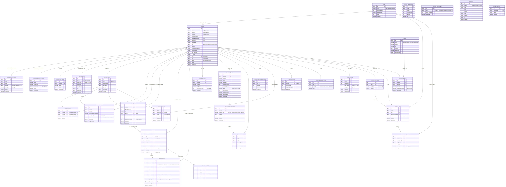

AI 코드 리뷰 구독 서비스 · 4인 팀 프로젝트
COGI
코드나 GitHub PR을 올리면 AI가 대신 리뷰하고, 반복해서 지적된 약점을 통계로 되돌려주는 구독형 서비스입니다. 저는 돈이 오가는 결제·구독과, 가입 전 체험을 열어두면서 AI 호출 비용이 새지 않게 막는 부분, 그리고 관리자 콘솔을 맡았습니다.
COGI 소개 영상 · Claude를 사용하여 영상을 제작하였습니다
프로젝트 소개
코드 리뷰는 배우는 사람에게 가장 빠른 피드백이지만, 리뷰해 줄 사람이 없으면 받을 수 없습니다. COGI는 코드나 GitHub PR을 올리면 AI가 대신 리뷰하고, 반복해서 지적된 약점을 팀·개인별 통계로 되돌려줍니다.
AI를 부를 때마다 실제 비용이 나가고, 월 구독료를 받으려면 돈이 오가는 흐름을 책임져야 합니다. 제가 맡은 부분이 정확히 이 지점이었습니다. AI 리뷰 로직 자체는 다른 팀원이 담당했습니다.
내 역할
사용자가 처음 써 보고 → 돈을 내고 → 운영자가 관리하는 흐름을 맡았습니다. 기능을 만드는 일보다, 잘못됐을 때 무슨 일이 벌어지는지를 막는 일이 대부분이었습니다.
- 결제·구독 TossPayments 빌링키 기반 정기 결제와 플랜 변경·해지 예약·크레딧 차감을 만들었습니다. 스케줄러가 여러 구독자를 한꺼번에 결제할 때 한 건의 실패가 다른 구독자에게 번지지 않도록 결제를 건별로 나눠 처리합니다.
- 비로그인 체험 가입하지 않아도 AI 리뷰를 써 볼 수 있게 열되, 24시간에 3회까지만 쓰도록 Redis로 횟수를 제한했습니다.
- 관리자 콘솔 운영자가 회원·공지·통계를 다루는 기능을 만들고, 긴급 공지 메일 발송을 맡았습니다.
전체 구조
왼쪽에서 오른쪽으로 요청이 흘러갑니다. 색이 들어간 칸이 제가 맡은 부분입니다.
실제 코드가 기능별로 나뉘어 있는 패키지 구조입니다. 색이 들어간 줄이 제가 맡은 부분입니다.
승인 여부를 모르는 결제를 실패 처리하는 문제
정기결제 요청이 타임아웃되면, 실제로는 승인됐어도 실패로 보고 구독을 FREE로 강등할 수 있었습니다.
결제 시도를 토스 호출 전에 DB에 먼저 기록하고, 같은 회차는 같은 주문번호로만 청구하게 했습니다. 결과를 모르면 강등하지 않고 주문번호로 토스에 조회해 확정하며, 카드 거절처럼 확실히 거절된 결제만 강등합니다.
8개 장애 시나리오 테스트, 실제 DB 롤백 테스트 2개, 응답 유실 100건 실험에서 잘못된 FREE 강등과 중복 청구가 0건이었습니다.
Trade-off
돈이 오가는 곳이라 중복 청구와 승인된 사용자의 강등은 반드시 막고, 처리 지연과 수동 확인은 감수하기로 했습니다.
- 1X즉시 실패 처리
응답이 없는 것과 거절된 것을 구분하지 못해 승인된 결제도 강등합니다.
- 2X새 주문번호로 재청구
앞선 요청이 이미 승인됐다면 두 번 청구됩니다.
- 3O같은 회차는 같은 주문번호 + 결제 조회
승인 여부를 확인한 뒤에만 확정해 둘 다 막습니다. 대신 시도 기록과 조회가 추가됩니다.
남은 한계
- 확정되지 않은 건과 요청 오류 건은 사람이 직접 확인해야 합니다.
비로그인 체험 요청이 횟수를 잘못 소모하는 문제
한도를 넘어 거절된 요청도 Redis 카운터를 올렸습니다. 그래서 AI 실패로 횟수를 돌려받아도 카운터가 여전히 한도를 넘어 있어, 다음 체험이 막혔습니다.
Redis 스크립트로 한도 확인·증가·만료 설정을 한 번에 처리해, 거절된 요청은 횟수를 늘리지 않게 했습니다. AI 실패 시 횟수 반환은 같은 24시간 기간 안에서만 되도록 제한했습니다.
동시 요청 40건에서 Redis와 DB 모두 정확히 3건만 허용해, 정확성은 같았고 차이는 운영 부담이었습니다.
Trade-off
AI 비용 상한과 체험 3회 보장을 함께 지키려면 한도 확인·증가·만료가 한 번에 처리돼야 했고, 그 조건을 채운다면 새로 만들어 운영할 것이 적은 쪽을 고르기로 했습니다.
- 1XDB에 횟수 저장
한 번에 처리는 되지만, Redis에 있던 카운터를 옮겨야 하고 만료된 행을 지우는 배치도 새로 만들어야 합니다.
- 2XRedis에서 증가 후 한도 검사 (기존)
증가와 검사가 따로라 거절될 요청도 횟수를 먼저 늘립니다.
- 3ORedis 원자적 처리
쓰던 Redis 그대로 스크립트 하나로 한 번에 처리하고, 만료는 TTL에 맡겨 배치가 필요 없습니다.
남은 한계
- Redis가 내려가면 체험 요청은 받지 않고 503으로 응답합니다.
- DB 방식보다 개별 사용 이력을 조회하기 어렵습니다.
서버가 종료되면 긴급 공지 메일 작업이 사라지는 문제
기존 @Async 방식은 응답은 빠르지만, 메모리에서 대기 중인 메일 작업이 서버가 종료되면 사라지는 구조였습니다.
공지 생성과 메일 작업 저장을 하나의 트랜잭션으로 묶었습니다. 조건부 UPDATE로 한 시점에 한 작업자만 작업을 가져가고, 중단된 작업은 5분 임대가 끝난 뒤 다시 처리합니다.
별도 JVM으로 재시작한 뒤에도 대기 작업 2건이 남아 있는 것을 확인했습니다.
Trade-off
긴급 공지는 늦더라도 빠짐없이 가는 것이 먼저였고, 4인 팀이라 이미 쓰는 MariaDB·Redis 외에 구성 요소를 늘리지 않으려 했습니다.
- 1X요청 안에서 바로 메일 발송
수신자 수만큼 관리자가 기다리고, 중간에 실패하면 어디까지 갔는지 모릅니다.
- 2X기존 @Async 유지
대기 작업이 메모리에만 있어 서버를 재시작하면 사라집니다.
- 3X메시지 브로커 도입
유실은 막지만 브로커를 새로 운영해야 해, 수신자 100명 규모엔 과합니다.
- 4ODB에 메일 작업 저장
공지와 작업이 한 트랜잭션에 남아 유실이 없고, 쓰던 DB만으로 재시도합니다.
감수한 것
- 수신자 100명 기준 공지 등록 p95가 약 28~30ms에서 75~83ms로 늘었습니다. (로컬 측정)
- 발송 직후 상태 저장에 실패하면 같은 메일이 중복으로 갈 수 있습니다. 유실보다 중복을 감수했습니다.
데이터 구조 (ERD)
어떤 정보를 어떤 표에 나눠 담고, 표끼리 어떻게 연결되는지 그린 설계도입니다.

구독 · 결제 · 관리자 도메인 중심 테이블 관계 · 원본 크게 보기